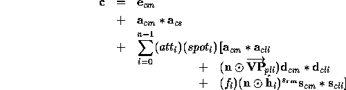

A lighting parameter is of one of five types: color, position, direction, real, or boolean. A color parameter consists of four floating-point elements, one for each of R, G, B, and A, in that order. There are no restrictions on the allowable values for these parameters. A position parameter consists of four floating-point coordinates (x, y, z, and w) that specify a position in object coordinates (w may, in some cases, be zero, indicating a point at infinity in the direction given by x, y, and z). A direction parameter consists of three floating-point coordinates (x, y, and z) that specify a direction in object coordinates. A real parameter is one floating-point value. The various values and their types are summarized in Table 2.5. The result of a lighting computation is undefined if a value for a parameter is specified that is outside the range given for that parameter in the table.
Table 2.5: Summary of lighting parameters.
The range of individual color components is .
There are n light sources, indexed by . (n is an implementation dependent maximum that must be at least 8.) Note that the default values for and differ for i=0 and i>0.
Before specifying the way that lighting computes colors, we introduce operators and notation that simplify the expressions involved. If and are colors without alpha where and , then define . Addition of colors is accomplished by addition of the components. Multiplication of colors by a scalar means multiplying each component by that scalar. If and are directions, then define

(Directions are taken to have three coordinates.)
If  and
and  are (homogeneous, with four coordinates)
points then let
be the unit vector that points from
are (homogeneous, with four coordinates)
points then let
be the unit vector that points from
 to .
Note that if
to .
Note that if  has a zero w coordinate and has
non-zero w coordinate,
then
has a zero w coordinate and has
non-zero w coordinate,
then  is the unit vector
corresponding to the direction specified by the
x, y, and z coordinates of
is the unit vector
corresponding to the direction specified by the
x, y, and z coordinates of  ;
if
;
if  has a zero w coordinate and
has a zero w coordinate and  has
a non-zero w coordinate then
has
a non-zero w coordinate then  is
the unit vector that is the negative of that corresponding to the
direction specified by
is
the unit vector that is the negative of that corresponding to the
direction specified by  .
If both
.
If both  and
and  have zero w coordinates,
then
have zero w coordinates,
then  is the unit vector obtained
by normalizing the direction corresponding to
is the unit vector obtained
by normalizing the direction corresponding to
 .
.
If  is an arbitrary direction,
then let
is an arbitrary direction,
then let  be the unit vector in
be the unit vector in  's direction.
Let
's direction.
Let  be the distance between
be the distance between  and
and  .
Finally,
let
.
Finally,
let  be the point corresponding to the vertex being lit,
and
be the point corresponding to the vertex being lit,
and  be the corresponding normal.
Let
be the corresponding normal.
Let  be the eyepoint ( in eye coordinates).
be the eyepoint ( in eye coordinates).
The color  produced by lighting a vertex is given by
produced by lighting a vertex is given by

where
All computations are carried out in eye coordinates.
The value of A produced by lighting is the alpha value associated with
 .
Results of lighting are undefined if the
.
Results of lighting are undefined if the  coordinate
(w in eye coordinates) of
coordinate
(w in eye coordinates) of  is zero.
is zero.
Lighting may operate in two-sided mode ( ),
in which a front
color is computed with one set of material parameters
(the front material)
and a back color
is computed with a second set of material parameters (the back material).
This second computation replaces
),
in which a front
color is computed with one set of material parameters
(the front material)
and a back color
is computed with a second set of material parameters (the back material).
This second computation replaces  with
with  .
If
.
If  ,
then the back color and front color are both assigned the
color computed using the front material with
,
then the back color and front color are both assigned the
color computed using the front material with  .
.
The selection between back color and front color depends on the primitive of which the vertex being lit is a part. If the primitive is a point or a line segment, the front color is always selected. If it is a polygon, then the selection is based on the sign of the (clipped or unclipped) polygon's signed area computed in window coordinates. One way to compute this area is
where  and
and  are the x and y window coordinates of the ith
vertex of the n-vertex polygon (vertices are numbered starting at zero for
purposes of this computation)
and is .
The interpretation
of the sign of this value is controlled with
are the x and y window coordinates of the ith
vertex of the n-vertex polygon (vertices are numbered starting at zero for
purposes of this computation)
and is .
The interpretation
of the sign of this value is controlled with
Setting dir to CCW (corresponding to counter-clockwise orientation of the projected polygon in window coordinates) indicates that if , then the color of each vertex of the polygon becomes the back color computed for that vertex while if a > 0, then the front color is selected. If dir is CW, then a is replaced by -a in the above inequalities. This requires one bit of state; initially, it indicates CCW.
COPYRIGHT © 1994, 1995 Silicon Graphics, Inc. All Rights Reserved. Trademark Information